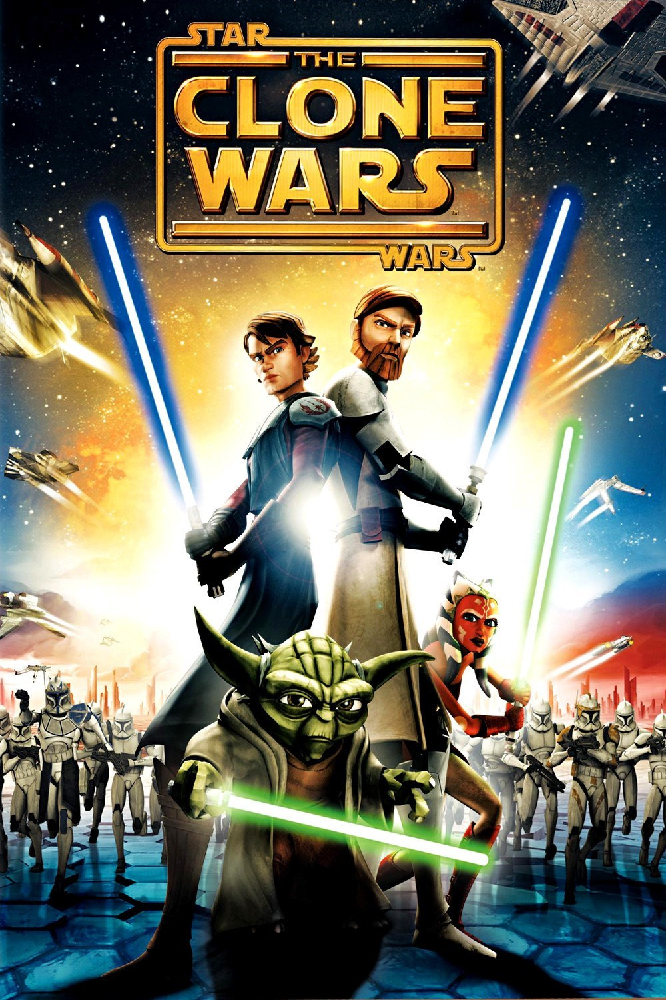

Souèástí ságy Star Wars jsou i dva animované seriály, Star Wars: Klonové války a Star Wars Povstalci. U obou seriálù je vidìt, že se tvùrci snažili, aby byly seriály atraktivní pro dìti i pro starší fanoušky celé ságy. Podle mého názoru se to povedlo spíše v Klonových válkách, které byli vysílány ještì pøed odkoupením studiem Disney.
